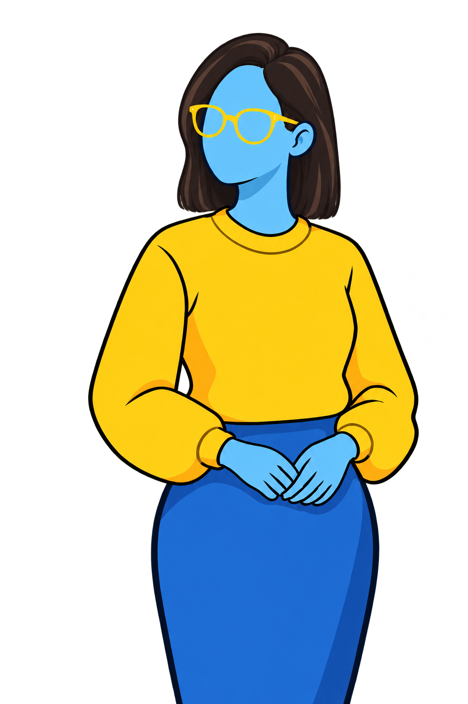
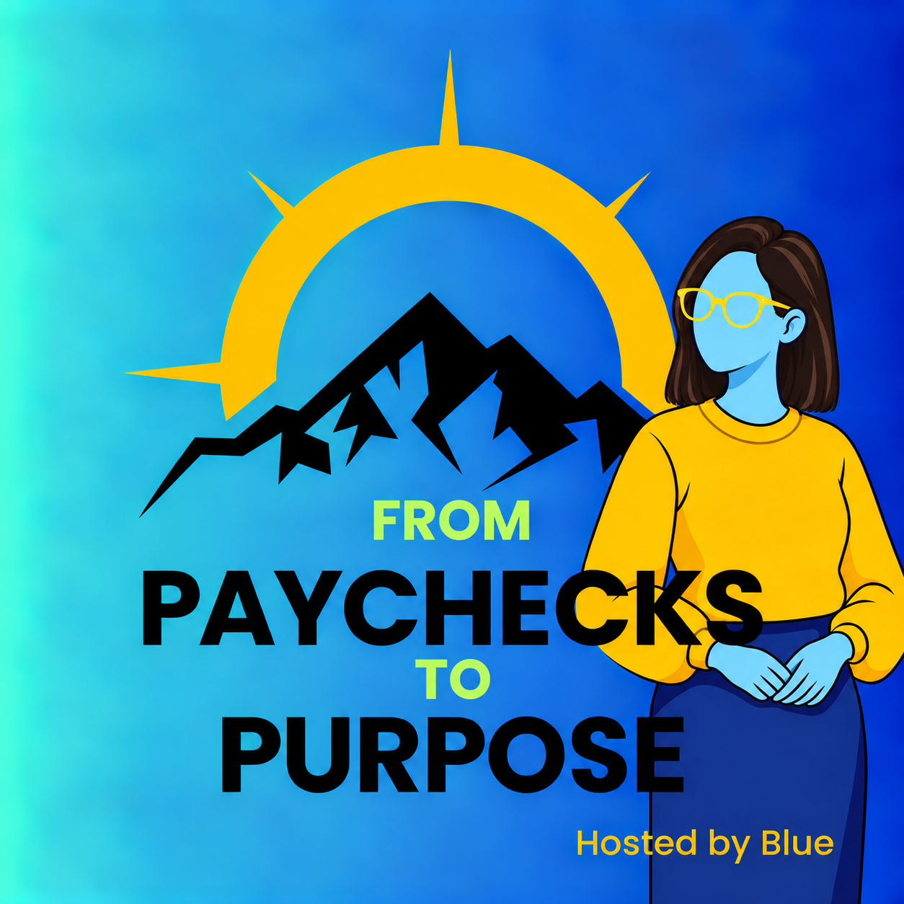
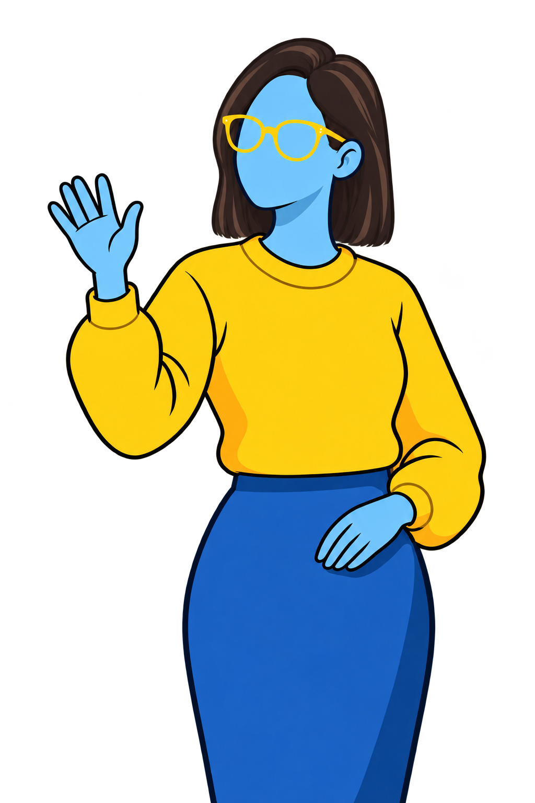

HOSTED BY BLUE
From Paychecks
to Purpose.
Welcome to From Paychecks to Purpose, where I talk about money, living a good life, and more.

FROM PAYCHECKS TO PURPOSE
About the podcast

This podcast is a place where I, Blue, discuss all things at the intersection of money and living a good life. My personal goal is to take a journey from paychecks to purpose in my life, and to get listeners to think about this in their own lives.
My podcast episodes come in a few formats: a journal-like episode where I discuss something I have been thinking about or trying to improve in my own life, reflective episodes about a specific topic with my husband, Green, or another guest in the personal finance community, and a 2-way interview episode with others who have made the leap from paychecks to purpose in their lives.
I have been lucky enough to have Aubrey Williams of Open Path Financial, Liz Gets Loaded, Doug Cunnington of Mile High FI, and Meghan Combs of EverydayFI on my podcast, and I am looking forward to more meaningful conversations with people trying to design their best lives with purpose at the center.
Latest episodes
Loading episodes…

Meet Blue
At 23, I had no idea what I spent every year, and I didn’t know how to invest. I had just worked hard to get an engineering degree and a good job. But while there were plenty of things to like about my job, I still found myself staring down a long row of cubicles, thinking “Is this it? Am I going to do this for the next 40 years?”
Then I found the FI (financial independence) movement and learned about life design. I realized that if I could gain financial knowledge, I could design a life others only dreamed of. From taking a career break to travel or spend time with kids, to career changes and more - the sky was the limit.
Five years and a lot of learning later, I’m CoastFi, meaning I have enough saved to live on in traditional retirement. I also have enough saved to take a sabbatical in my 30’s if I want. Finally, I can also take bets on myself, like helping others through finance coaching/advising, which I am ramping into.
But there’s another piece to this story: my mom passed away when I was young. Seeing her robbed of a longer life - it was really tough. I have dreams I want to accomplish, and I do not want to wait until 65 to make them happen, because I can’t guarantee I’ll make it there in the first place.
If you are also thinking through how to move from paychecks to purpose in your life, my hope is that this podcast might give you some fresh ideas or inspiration. If you have feedback to give me, please leave me an email at frompaycheckstopurpose@gmail.com or DM me on Instagram @frompaycheckstopurpose. Thank you for listening! :)
FI CALCULATOR
Fi Calculator
****Your calculator introduction goes here.****